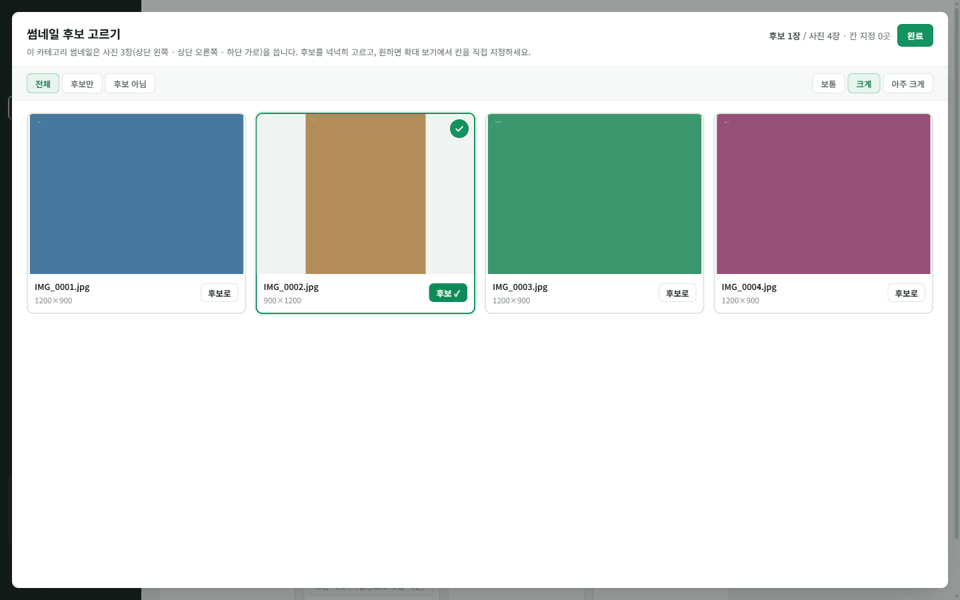
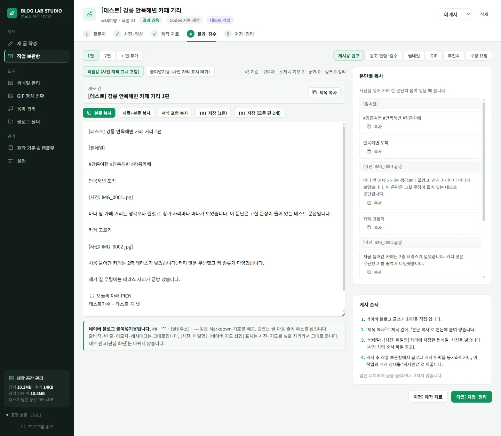

BLOG LAB STUDIO · 개발 진행 중03. 스토리보드 / UI·UX
사용자가 결정을 내리는 화면
D안 대시보드에서 카테고리를 고르면 해당 질문지로 들어간다. 사진 화면에서는 편과 순서를 배정하고 썸네일 후보를 확대해 고른다. Excel을 가져온 사용자는 비어 있는 필수 항목부터 확인할 수 있다.
제작 화면은 사용할 모델·추론 강도와 진행 로그를 보여준다. 결과 화면에서는 원고, 썸네일, 편별 검수 결과를 함께 확인한다. 게시용 원고를 복사한 뒤 저장 화면에서 최신 결과의 저장 여부를 확인한다.
보관함·음악·폴더·제작 공간 화면은 글을 완성한 뒤 쓰는 도구다. 특히 폴더 이동은 변경 예정 목록을 먼저 보여주고 사용자가 고른 항목을 처리한다.
 새 글과 작업 보관함
새 글과 작업 보관함 카테고리별 질문지
카테고리별 질문지
후보 선택과 확대 검수 캡처 2장
게시용 원고와 문단별 복사 테스트 작업